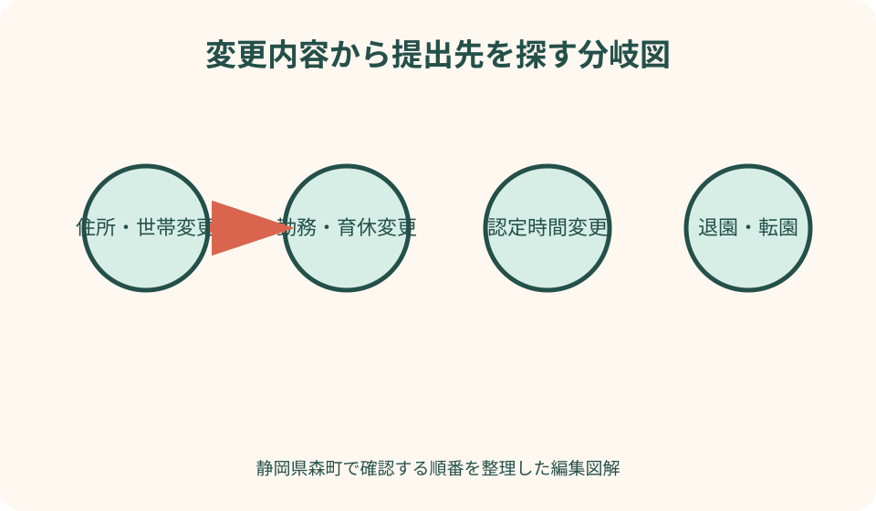
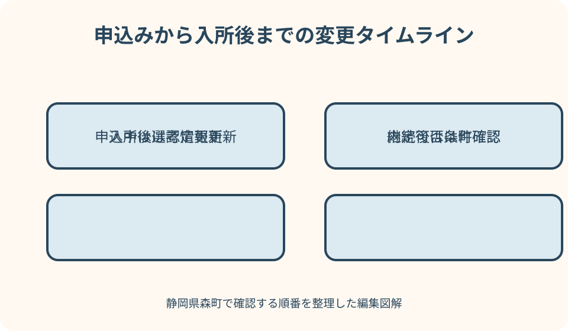

妊娠・子育て手続｜最終確認 2026-08-10
静岡県森町の保育所変更届｜住所・勤務先・育休・退園の手続き
保育所等へ申し込んだ時点の内容が変わったら、入所決定を待たず森町へ連絡することが基本です。住所・氏名・家族構成は変更届、就労時間や勤務先、退職、求職から就職への変更は新しい就労証明書等、申込み不要なら取下願というように、変更内容で手続きが異なります。施設へ伝えただけで町の認定や申込情報まで変わるとは限りません。

編集イラスト静岡県森町で変更が生じたら最初にすること
最初に、変更が決まった日、実際に変わる日、変更前、変更後を書きます。会社から内示を受けた日と勤務開始日、引っ越し契約日と住民異動日などは同じとは限りません。
次に、町へ提出した申込書・就労証明書・認定通知の控えを出します。どの欄が現状と違うか印を付けると、変更届だけか追加証明も必要かを相談しやすくなります。
森町公式は、申込内容に変更があれば速やかに健康こども課へ連絡するよう案内しています。連絡せず入所が決定した場合、内定・決定が取り消される場合があるとも明記されています。
この記事の確認日は2026年8月10日です。様式、提出期限、認定の取扱いは変わり得ます。対象年度の森町公式ページと健康こども課幼稚園保育園係の個別案内を優先してください。
申込み中と入所後を分ける
同じ勤務先変更でも、利用調整前、内定後、正式決定後、入所後で確認事項が異なります。まず現在どの段階かを町からの通知や受付控えで確認します。
申込み中の変更は、利用調整に使う情報を更新する意味があります。古い条件のまま選考されないよう、変更予定でも町へ伝え、いつ新しい証明書を出すか確認します。
内定・決定後の変更は、内定条件や保育の必要性、利用開始へ影響する可能性があります。施設との面談だけで済ませず、町へ同時に連絡します。
入所後は、教育・保育給付認定、保育時間、保育料、施設の送迎・緊急連絡など複数の情報を更新する場合があります。町と施設の両方に必要な連絡を分けます。
住所が変わる場合
森町内で転居する場合は、住民異動と保育申込・認定の住所変更を分けて確認します。住民票を動かせば保育部門の全書類が自動更新されると決めないようにします。
新住所では、通園経路、送迎者、緊急時の迎え、施設までの時間も変わります。住所変更届だけでなく、施設へ新しい連絡先と送迎予定を伝える必要があるか確認します。
森町外へ転出する場合、現在の施設をいつまで利用できるか、広域利用へ切り替えられるか、新自治体へ再申込みが必要かを両自治体へ相談します。継続利用を保証できません。
転出日と退園日を別々に記録します。新自治体の入所決定前に森町の退園日を確定すると保育の空白が生じ得るため、手続き期限と変更可能日を先に聞きます。
氏名・連絡先・世帯情報が変わる場合
森町は、住所、氏名、家族構成など申込書の記載内容に変更があったとき、教育・保育給付認定証記載事項等変更届出書の提出を案内しています。
電話番号や緊急連絡先だけの変更でも、施設と町の双方に最新情報が届いているか確認します。子どもの体調不良時に古い番号へ連絡されないよう、変更日当日に更新します。
婚姻、離婚、同居開始、別居、出生、死亡などの世帯変更は、保育の必要性や保育料算定にも関係する可能性があります。戸籍・住民票手続きとは別に、保育担当へ必要資料を尋ねます。
同一敷地内の別棟や隣接地への家族転居も、森町の申込案内では同居親族の扱いに関係する記載があります。家庭の感覚だけで世帯外と決めず、実際の居住状況を説明します。
勤務先が変わる場合
転職が決まったら、旧勤務先の退職日、新勤務先の採用日、実際の勤務開始日、空白期間を書きます。内定日だけを就労開始日として扱いません。
森町へは、保育を必要とする理由が変わる変更として、新しい就労証明書の再提出が必要か確認します。旧勤務先の証明書へ新しい勤務先情報を保護者が書き足さないでください。
新しい勤務地により送迎時間や保育時間が変わる場合、認定時間の変更申請が必要かを相談します。施設の延長保育申込みと町の認定変更は別手続きになる可能性があります。
派遣元・派遣先の変更、異動、転勤、在宅勤務開始など、雇用主が同じでも実際の就労場所が変わる場合があります。就労証明書のどの項目を更新するか勤務先と町へ確認します。
就労時間・勤務日数が変わる場合
森町は、就労時間が短くなった・長くなった場合を、保育を必要とする理由の変更例として示し、該当する証明書の再提出を求めています。
契約時間、実績、残業、通勤、休憩は異なる情報です。保護者が新しい月時間を独自計算せず、勤務先に現行様式で正確に証明してもらいます。
短時間勤務制度の開始・終了、シフト変更、夜勤追加などで必要な保育時間が変わるときは、適用日を確認します。申請日より前へ遡るかを家庭で決めません。
月64時間など保育が必要な事由の基準に近い変更では、継続できる・できないを記事から断定しません。契約内容と変更日を示し、町の認定判断を受けます。
退職して求職活動へ移る場合
退職したら、最終勤務日、雇用終了日、求職開始日を分けます。次の仕事が決まる見込みでも、旧就労証明書の状態を継続しているように扱いません。
森町の案内では、求職活動を保育が必要な事由とする場合の利用期間が示されています。切替手続き、必要な申立書、求職活動の確認方法を町へ尋ねます。
求職中から勤務先が決まった場合も、変更例として新しい証明書の再提出が必要とされています。採用予定日と実際の就労開始日が違うときの提出時期を確認します。
求職期間中に同じ施設を利用できるか、認定時間が変わるか、期限後の扱いは個別状況で確認されます。『○か月は必ず継続』と一般化しないでください。
育児休業へ入る場合
下の子の出生などで育児休業を取得する場合、休業開始日、終了予定日、復職予定日、在園児の年齢を書きます。産前産後休業と育児休業も分けます。
こども家庭庁は、育児休業取得中に既に保育を利用する子どもがおり、継続利用が必要な場合を保育の必要性の事由として示しています。実際の継続認定は市町村へ確認します。
森町で継続利用が認められる条件、期間、認定時間、提出書類を健康こども課へ相談します。きょうだいの年齢や家庭状況が似ていても、別家庭の例をそのまま適用しません。
勤務先には、育児休業期間を就労証明書へ正確に記載してもらいます。保護者が保育継続に都合のよい復職日を記入するのではなく、会社が証明できる予定日を使います。
育休から復職する場合
復職前には、会社の復職決定日、実際の勤務開始日、短時間勤務の期間、勤務時間帯を確認します。申込時の予定と違えば、変更前に町へ伝えます。
新規入所では、森町が復職日と入所可能月の関係、復職後の就労証明書提出を案内しています。在園中の家庭も同じ扱いと決めず、現在の認定に必要な再提出を尋ねます。
復職後の勤務実績がまだなくても、いつの時点で再証明を受けるか町の指示に従います。予定証明と実績証明を混ぜず、ファイル名と証明日を分けます。
復職延期、育休延長、会社都合の配置変更が決まったら、当初日を過ぎる前に連絡します。入所・継続がそのまま認められるかは変更理由と状況に応じて町が確認します。
保育標準時間・短時間が変わる場合
保育標準時間と保育短時間は、施設の開所時間そのものではなく、保護者の状況に基づく認定区分です。勤務変更で送迎時刻が変わっても、自動的に認定が切り替わるとは限りません。
変更を希望するときは、新しい勤務時間、通勤時間、希望する利用開始・終了時刻を整理します。就労証明書と認定変更の申請をいつ出すか町へ確認します。
認定変更の適用月まで、施設の延長保育を使う必要があるかを施設へ相談します。延長申込、料金、締切は認定変更とは別に確認します。
短時間から標準時間へ変わる、または逆の場合、保育料や利用可能時間への影響を通知で確認します。保護者が変更希望日から勝手に利用時間を変えません。

世帯員・同居親族が変わる場合
同居親族の転入・転出、結婚、離婚、別居、出生などは、申込書の家族構成と保育料算定に関係する可能性があります。変更日と生活実態を町へ伝えます。
森町の申込案内では、65歳未満の同居親族について保育が必要な事由を証する書類を求める説明があります。新たな同居者が該当する場合の提出物を確認します。
二世帯住宅、同一敷地内別棟、隣接地も同居に含むという町案内があります。住民票の世帯が別という理由だけで追加書類不要と判断しません。
世帯変更で市町村民税の算定対象が変わる場合、いつの保育料へ反映されるかは町へ確認します。家族が新額を計算して引落額を調整しないでください。
子どもの健康・配慮事項が変わる場合
診断、アレルギー、服薬、食事制限、発達上の配慮などが変わった場合は、行政の認定変更とは別に施設へ早めに相談します。口頭だけでなく指定書類の有無を確認します。
薬や食事の対応は、家庭からの希望だけで開始・変更できるとは限りません。医師の指示書など何が必要か、いつから対応可能かを施設へ尋ねます。
緊急連絡先、かかりつけ医、送迎できる人も更新します。町へ変更届を出したことを理由に、施設の個別カードまで更新されたと仮定しません。
子どもの状態を理由に継続不可・可能と記事では判断できません。安全な受入体制を町と施設が確認できるよう、情報を隠さず、必要な相談期間を確保します。
希望施設を変更したい場合
申込み後に希望順位を変えたい場合は、健康こども課へ変更方法と期限を確認します。森町は、変更時期によって利用調整の状況により受けられない場合もあると案内しています。
転居、転勤、きょうだいの学校、見学結果など、変更理由を整理します。人気情報だけで順位を入れ替えず、実際に通える施設かを再確認します。
内定後に別施設を希望する場合、現在の内定を保持したまま変更できるとは限りません。辞退、再申込み、次回調整の関係を町へ確認してから判断します。
変更届を出したら、受付日、新しい希望順、適用される選考回を記録します。口頭相談だけで変更完了とせず、必要な書面や電子申請の受付を確認します。
退園する場合
退園が決まったら、最終利用希望日、引っ越し日、勤務終了日、次の保育先を整理します。施設への口頭連絡だけで町の認定と請求が終了するとは限りません。
退園届の様式、提出期限、月途中退園の保育料、給食費・教材費の精算、口座振替停止を町と施設へ分けて聞きます。
森町外への転出に伴う退園では、新自治体の入所決定前に退園日を確定すると空白が生じる可能性があります。現園の継続可否を両自治体へ確認します。
退園後に申込みが不要になった場合、申込段階なら取下願が案内されています。入所後の退園と申込取下げを同じ書類と決めず、現在の段階を伝えます。
転園を希望する場合
転園は、現在の在籍を保ったまま希望園へ自動的に移れる手続きではありません。申込方法、利用調整、現在園の退園時期を町へ確認します。
転園理由は、転居、勤務動線、きょうだい、子どもの配慮など事実に基づいて整理します。現在園への不満だけでなく、新園で必要な条件を明確にします。
希望園へ決まらなかった場合、現在園を継続できるか、申込みが次回へ残るか、辞退扱いはどうなるかを事前に聞きます。継続を保証できません。
転園決定後は、健康情報、アレルギー、用品、保育料、ならし保育を引き継ぎます。新園へ通い始める日と旧園の最終日を正式通知で確認します。
変更連絡を早く行う良い点
良い点は、古い就労・世帯情報のまま利用調整や認定が進むのを避けられることです。必要な再証明の発行時間も確保できます。
変更日より前に相談すれば、町の届出、勤務先証明、施設の時間変更を別々の締切で準備できます。一日で全て変わると思わずに済みます。
家族の予定表へ適用日を書くと、保育料、認定時間、延長利用、送迎担当の切替を同時に確認できます。通知が遅れた場合も未確定部分が分かります。
記録を残せば、町、施設、勤務先へ同じ事実を伝えられます。説明の食い違いを隠すのではなく、どの資料を修正するかを特定できます。
森町の案内へ注文したい点
注文したい点は、住所、勤務、育休、世帯、認定時間、希望園、退園という変更別に、必要様式と提出期限を一覧化すると分かりやすいことです。
就労時間変更では、就労証明書再提出と認定時間変更の関係、適用月、施設の延長利用を一つの図で示すと手戻りが減ります。
育休中の継続について、相談時に伝える項目、必要書類、認定期間の確認方法がFAQ化されると、別家庭の経験へ頼らずに済みます。
退園・転園では、現在園の継続、希望園の利用調整、保育料精算を分けた工程表があると、保育の空白を早く発見できます。
書類が間に合わないときの代案・結論
代案・結論として、新しい就労証明書が間に合わない場合は、判明した時点で町へ連絡します。旧証明書を現状のように提出せず、依頼日と発行予定日を伝えます。
変更届の様式が分からない場合は、過去年度の用紙を使わず、現在の手続き名、対象者、変更内容を町へ伝えて最新版を案内してもらいます。
変更後に継続できるか不安でも、連絡を遅らせると古い内容で決定が進む可能性があります。事実と未確定を分け、判断は町へ委ねます。
最終的には、変更日、旧内容、新内容、現在の手続き段階、証明書の準備状況を一枚にし、町と施設へ必要な連絡を分けます。継続可否は個別に確認されます。
図解案1：変更内容から提出先を探す分岐図
一つ目の図解は、中央に『何が変わるか』を置き、住所・氏名・世帯、勤務先・時間、育休・復職、認定時間、希望園、退園・転園へ分岐します。
各枝に、町の変更届、就労証明書、施設連絡、住民異動、取下願など候補書類を置きます。確定様式は町へ確認する印を付けます。
上段には変更決定日、下段には適用日を置き、相談・証明依頼・提出・通知をその間へ配置します。変更後に動くのではなく事前相談する流れを示します。
背景に森町保健福祉センター、勤務先、家庭、保育施設を描き、同じ情報でも提出先が違うことを矢印で表します。
図解案2：申込みから入所後までの変更タイムライン
二つ目は、申込受付、利用調整、内定、正式決定、入所、継続利用を横に並べ、変更が起きた位置で連絡内容が変わる図です。
申込中の変更は利用調整情報へ、内定後は内定条件へ、入所後は認定・保育時間・施設情報へ接続します。全段階で町への連絡を共通線にします。
住所、勤務、育休、世帯、退園を色分けし、同じ変更でも複数の書類へ影響することを重ねます。保護者が一枚直せば終わる印象を避けます。
右端には『継続可否・適用月は通知で確認』と置きます。記事や家族判断で結果を確定しないことを視覚化します。

大石の視点：変化を隠さず暮らしを組み直す
大石の視点では、仕事や世帯の変化を『保育が続かなくなるかもしれないから言いにくい』情報にしないことが大切です。早く伝えるほど選択肢と準備時間が増えます。
森町では送迎距離が勤務先変更の影響を大きくする場合があります。就労時間だけでなく、新しい通勤経路、迎え担当、災害時の代替路を見直します。
転居や転職が同時に起きる家庭は、住民異動、保育認定、就労証明、施設連絡を一日で終わらせようとせず、担当者と期限を分けます。
継続利用が未確定なら、家族の休暇、在宅勤務、一時的な預け先を候補として準備します。候補を確定利用のように予定へ入れず、登録・空きを確認します。
家族で使う変更管理表
管理表の先頭には、対象児童、施設、認定区分、申込・入所段階、変更決定日、変更日を書きます。次に旧内容と新内容を左右へ並べます。
連絡先は、健康こども課、施設、住民窓口、勤務先、新自治体などを分けます。連絡日、回答、担当部署、次の期限を一行ずつ残します。
書類は、変更届、就労証明書、申立書、住民異動、退園届、取下願を候補として記載し、必要・不要・確認中を示します。
最後に、認定時間、保育料、施設利用、送迎、緊急連絡の更新日を確認します。一つの通知が届いても全項目完了とは限りません。
一次情報を確認する順番
最初に森町の対象年度入所案内で、変更例、再提出、変更届、取下願、内定取消の注意を確認します。過去年の案内ではなく現在年度を使います。
次に森町の保育所等一覧で、施設の保育時間や連絡先を確認します。施設運用の変更は園へ、認定・申込情報は町へ質問を分けます。
就労証明書は森町掲載様式とこども家庭庁の記載要領を確認します。勤務先が証明する欄を保護者が訂正しません。
こども家庭庁の新制度ページは、保育の必要性、育休中の継続、標準時間・短時間の一般的な仕組みを理解する資料です。個別判断は森町へ戻します。
森町への問い合わせ例
森町の窓口は健康こども課幼稚園保育園係で、公式ページの電話番号は0538-86-6300です。申込控えや認定通知を手元に置いて連絡します。
勤務変更なら、『○月○日から勤務先と勤務時間が変わります。現在は○時間認定です。就労証明書再提出と認定変更の期限を確認したいです』と伝えます。
育休なら、『○月○日から育児休業予定で、在園児は○歳です。継続認定の条件、必要書類、認定時間を確認したいです』と質問します。
退園・転園なら、『○月に転居予定です。現在園の最終利用日、退園届、転園申込み、決まらない場合の継続可否を確認したいです』と未確定部分を明示します。
まとめ：変更前に町と施設へ分けて連絡する
住所、勤務先、就労時間、育休・復職、世帯、認定時間、退園・転園は、それぞれ影響する書類と担当が違います。変更日を中心に工程を作ります。
森町は申込内容の変更を速やかに連絡し、就労状況の変更では証明書を再提出するよう案内しています。古い情報のまま決定を待ちません。
町への届出と施設への日常情報更新は別です。片方へ連絡しただけで、認定、保育料、送迎、緊急連絡が全て変わったと仮定しません。
今日の一歩は、変更前後を一行で書き、申込・内定・入所後のどの段階か確認して健康こども課へ連絡することです。継続可否や適用月は正式回答で確定してください。
公式情報・確認先
掲載内容は次の一次情報を基礎に整理しました。営業、料金、催し、交通は変わるため、出発前または手続き前にリンク先で最新情報を確認してください。
- 令和8年度 保育所等入所の申込みについて（静岡県森町、2026-08-10確認）
- 保育所等について（静岡県森町、2026-08-10確認）
- 令和8年度 教育・保育給付認定申請書兼入所申込書（静岡県森町、2026-08-10確認）
- 令和8年度 森町立幼稚園預かり保育の申込みについて（静岡県森町、2026-08-10確認）
- 就労証明書に関する情報（こども家庭庁、2026-08-10確認）
- よくわかる子ども・子育て支援新制度（こども家庭庁、2026-08-10確認）